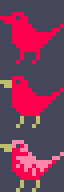
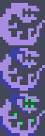
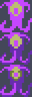
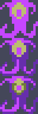
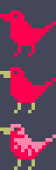
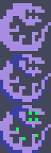
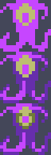

Monsters
In this section, we're going to make aMonsterTileEarlier, we used just two variables (
xyTilemonster.js
spritehptileOK, let's start working on that movement code. Before moving we first check a
tryMoveBecause in a broughlike the player and other monsters may often "try" to move into tiles where they can't fit! This might mean bouncing off a wall or it might turn into bump combat, a staple of classic roguelikes.
monster.js
movereturn true;All the
movemonstertiletilemonsterOK then. Which monster are we going to make first? The player!
"Beware that, when fighting monsters, you yourself do not become a monster... " -Nietzsche
When I first started writing roguelikes I naturally coded the player as a separate thing from the monsters. It seemed counterintuitive to make them the same kind of thing, but actually they share so much behavior. And also it's a common roguelike mechanic that monsters and players behave in similar ways.
monster.js
FloorWall03I'm setting an extra flag called
isPlayerOk, now let's put that player class to use and rip out all our
xyindex.html
game.js
Drawing Monsters
I'd like you to draw the 5 monsters used in the game. As a reminder, the strategy I used was to create a basic shape and then in the next two steps draw shading and highlights.
The tiny resolution and small color palette of each sprite makes this process fairly easy. Importantly, I didn't worry too much about how great these looked or if they made sense (they definitely don't). Rather my goal was simple sprites that all felt distinct from one another.
First, the lowly Bird.  Here, I made a lizardy dude that I'm calling Snake for some reason.  Some blobby thing that's going to have lot of health thus called Tank. Sort of a big dinosaur head called Eater. The last monster is the Jester.

While we're here, let's draw an HP pip sprite.
The last monster is the Jester.

While we're here, let's draw an HP pip sprite.
With the hard part out of the way, let's code up the monsters. For now, each one will only differ by sprite and starting HP. More detail to follow.
The tiny resolution and small color palette of each sprite makes this process fairly easy. Importantly, I didn't worry too much about how great these looked or if they made sense (they definitely don't). Rather my goal was simple sprites that all felt distinct from one another.
First, the lowly Bird.  Here, I made a lizardy dude that I'm calling Snake for some reason.  Some blobby thing that's going to have lot of health thus called Tank. Sort of a big dinosaur head called Eater.
The last monster is the Jester.

While we're here, let's draw an HP pip sprite.
monster.js
index.html
map.js
monstersIn
spawnMonsterMonstershufflenewrandomPassableTilemonstersOnly two more things to get monsters into the game: actually triggering
generateMonstersmap.js
game.js
I often use a pathfinding algorithm called A* to handle monster movement. But take a look at the pseudocode. It's hard to get right, even if you've written it before.
Instead we're going to take a shortcut and use "greedy" movement, which simply means trying to get closer on every turn even if it's not the ideal path in the long term. Monsters will try to move closer even when that gets them trapped. Trust me, this will still lead to interesting (but unique) gameplay.
monster.js
sortneighborsHere's the method for calculating distance, specifically Manhattan distance.
tile.js
updategame.js
monstersupdatespliceNotice we never defined a
deadThe last piece of the puzzle is when to call
tickmonster.js
tryMovePlayerMonstersuper.tryMove(dx, dy)tickTry out your game and that's exactly what you should see.
In the next section, we're going to get the monsters attacking and fill out the details in our 5 monster implementations.